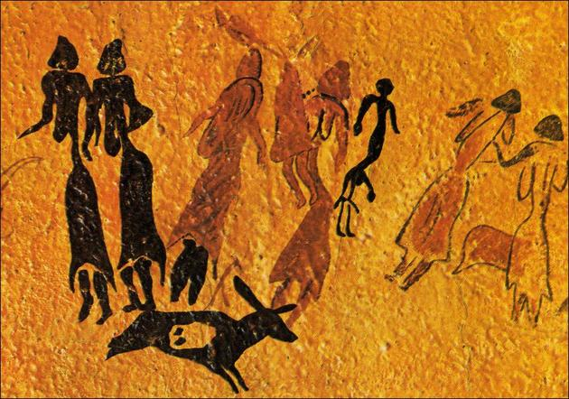
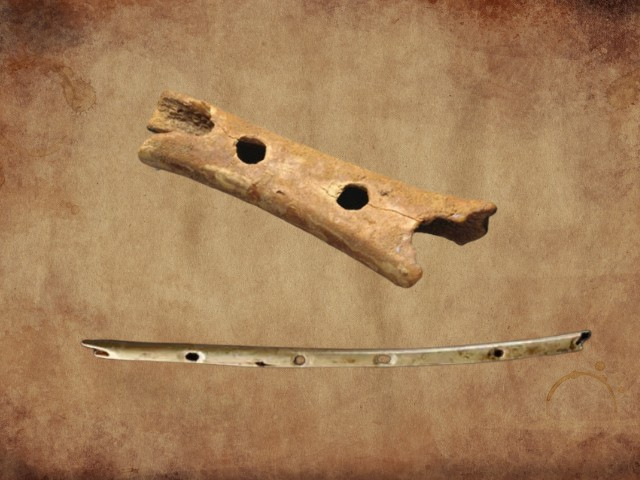
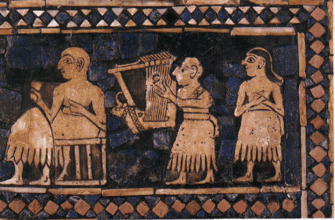
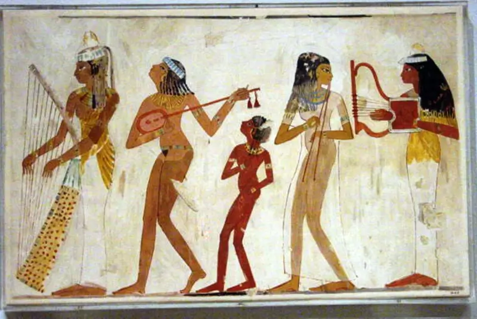
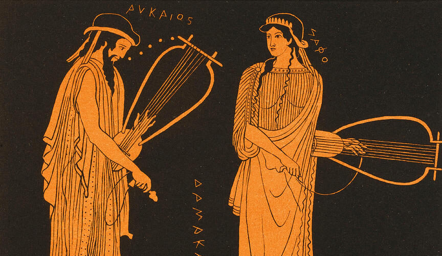
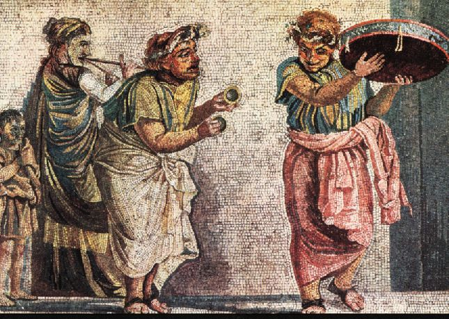
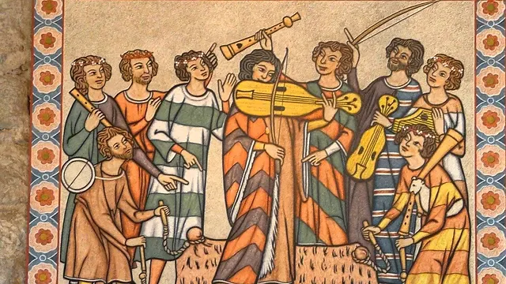
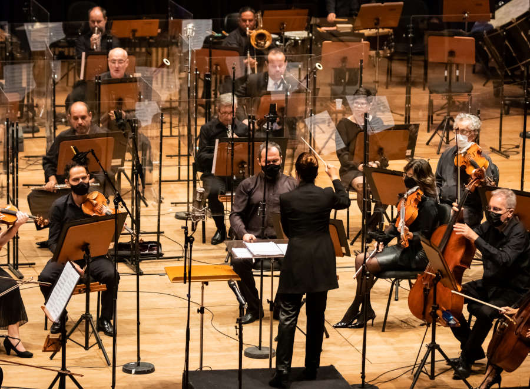

Introdução
A música é uma das formas de arte mais antigas da humanidade. Presente em praticamente todas as culturas do mundo, ela acompanha o ser humano desde os tempos pré-históricos. Seja para celebrar conquistas, expressar sentimentos, realizar rituais religiosos ou simplesmente proporcionar entretenimento, a música sempre desempenhou um papel importante na sociedade.
Mas como ela surgiu? Como os primeiros seres humanos descobriram que poderiam organizar sons para criar algo tão especial? Embora não exista uma resposta definitiva, arqueólogos, historiadores e cientistas desenvolveram teorias que ajudam a explicar a origem da música.
O Surgimento da Música na Pré-História
Acredita-se que a música tenha surgido há dezenas de milhares de anos, antes mesmo da invenção da escrita. Os primeiros seres humanos viviam em constante contato com a natureza e observavam atentamente os sons ao seu redor.
O canto dos pássaros, o som da chuva, o rugido dos animais, o vento soprando entre as árvores e o movimento das águas provavelmente serviram de inspiração para as primeiras manifestações musicais.
Além dos sons da natureza, o próprio corpo humano pode ter sido um dos primeiros instrumentos musicais. Bater palmas, estalar os dedos, bater os pés no chão e produzir sons com a voz eram formas simples de criar ritmos e melodias.
Muitos pesquisadores acreditam que a música surgiu como uma forma de comunicação antes do desenvolvimento da linguagem complexa.

As Primeiras Teorias Sobre a Origem da Música
Existem diversas teorias que tentam explicar como a música apareceu.
Teoria da Comunicação
Segundo essa teoria, a música surgiu a partir dos sons utilizados pelos seres humanos para se comunicar. Antes da linguagem moderna, nossos ancestrais poderiam ter utilizado diferentes tons de voz para transmitir emoções e mensagens.
Teoria da Natureza
Outra hipótese sugere que os seres humanos começaram a imitar os sons encontrados na natureza. Aos poucos, essas imitações se transformaram em padrões organizados, dando origem à música.
Teoria da Evolução
Alguns cientistas acreditam que a música teve um papel importante na evolução humana. Ela poderia ajudar na cooperação entre grupos, fortalecer laços sociais e até influenciar a escolha de parceiros.
Os Primeiros Instrumentos Musicais
Com o passar do tempo, os seres humanos começaram a fabricar instrumentos para ampliar suas possibilidades sonoras.
Instrumentos de Percussão
Os instrumentos mais antigos provavelmente foram os de percussão, produzidos por meio de:
- Pedras
- Troncos de árvores
- Ossos
- Cascas de sementes
- Conchas
Esses objetos eram batidos ou sacudidos para produzir ritmos.
Instrumentos de Sopro
Posteriormente surgiram os instrumentos de sopro. Entre os mais antigos já encontrados estão flautas feitas de ossos de aves e marfim de mamute.
Arqueólogos descobriram flautas com aproximadamente 40 mil anos de idade em cavernas da atual Alemanha, evidenciando que a música já fazia parte da vida humana muito antes do surgimento das primeiras civilizações.

A Música nas Primeiras Civilizações
Com o desenvolvimento das sociedades, a música passou a ocupar um papel cada vez mais importante.
Mesopotâmia
Na região conhecida como Mesopotâmia, considerada o berço de algumas das primeiras civilizações, a música era utilizada em cerimônias religiosas, festas e eventos políticos.
Foram encontrados registros de instrumentos como liras, harpas e tambores.

Egito Antigo
No Egito Antigo, a música estava presente em praticamente todos os aspectos da vida.
Ela era utilizada em:
- Cerimônias religiosas
- Festivais
- Coroações
- Funerais
- Celebrações populares
Os egípcios utilizavam harpas, flautas, alaúdes e instrumentos de percussão.

Grécia Antiga
Os gregos valorizavam profundamente a música. Ela fazia parte da educação dos jovens e era considerada essencial para o desenvolvimento intelectual e moral.
Filósofos como Pitágoras estudaram as relações matemáticas entre as notas musicais, contribuindo para a compreensão da teoria musical.

Roma Antiga
Os romanos herdaram grande parte da cultura musical grega. A música era utilizada em cerimônias públicas, apresentações teatrais, festivais e eventos militares.

A Música na Idade Média
Durante a Idade Média, a música esteve fortemente ligada à religião. Nas igrejas cristãs, surgiram os chamados cantos gregorianos, caracterizados por melodias suaves e executadas sem acompanhamento instrumental.
Ao mesmo tempo, músicos viajantes conhecidos como trovadores percorriam cidades e castelos cantando histórias sobre amor, aventuras e acontecimentos históricos.
Foi nesse período que surgiram importantes avanços na escrita musical, permitindo que as composições fossem registradas e preservadas.

O Renascimento Musical
Entre os séculos XV e XVI, a Europa viveu um período conhecido como Renascimento.
A música tornou-se mais sofisticada e passou a explorar novas formas de composição. Os compositores começaram a criar obras com várias vozes simultâneas, técnica chamada de polifonia.
Além disso, surgiram instrumentos mais avançados, contribuindo para a expansão das possibilidades musicais.
O Desenvolvimento dos Instrumentos
Ao longo dos séculos, diversos instrumentos foram aperfeiçoados.
Entre eles:
- Violino
- Violoncelo
- Piano
- Trompete
- Clarinete
- Órgão
Esses instrumentos tiveram papel fundamental no surgimento das grandes orquestras.
A Música Moderna
Nos séculos XIX e XX, a música passou por transformações profundas.
O surgimento das gravações sonoras permitiu que as pessoas ouvissem músicas sem a necessidade de apresentações ao vivo.
Posteriormente vieram:
- O rádio
- Os discos de vinil
- As fitas cassete
- Os CDs
- Os arquivos digitai
- Os serviços de streaming
Essas inovações revolucionaram a forma como a música é produzida e consumida.
Os Principais Gêneros Musicais
Ao longo da história surgiram inúmeros estilos musicais.
Alguns dos mais populares são:
- Música clássica
- Blues
- Jazz
- Rock
- Pop
- Samba
- Bossa Nova
- Sertanejo
- Rap
- Hip-Hop
- Funk
- Música eletrônica
Cada gênero reflete características culturais, históricas e sociais de diferentes povos e épocas.
A Importância da Música para a Sociedade
A música possui diversas funções na vida humana.
Ela pode:
- Expressar emoções
- Preservar tradições culturais
- Fortalecer a identidade de um povo
- Promover entretenimento
- Auxiliar na educação
- Estimular a criatividade
- Favorecer a socialização
Além disso, estudos científicos indicam que a música pode contribuir para o bem-estar emocional e para o desenvolvimento cognitivo.

Um Breve Resumo
A história da música se confunde com a própria história da humanidade. Desde os sons produzidos pelos primeiros habitantes da Terra até as complexas produções digitais atuais, a música evoluiu constantemente, acompanhando as transformações culturais, sociais e tecnológicas das civilizações.
Mais do que uma forma de entretenimento, a música é uma expressão da criatividade humana e uma poderosa ferramenta de comunicação. Sua capacidade de despertar emoções, unir pessoas e transmitir histórias garante que ela continue sendo uma das manifestações artísticas mais importantes do mundo.